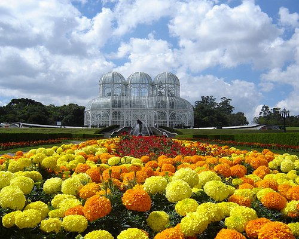
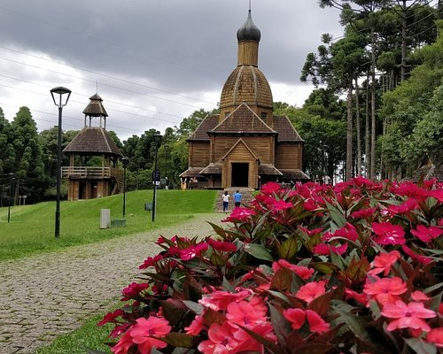
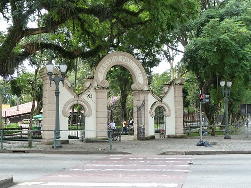
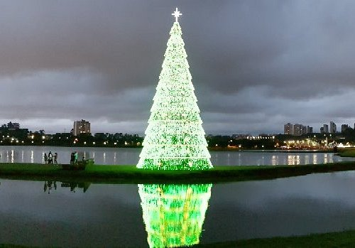

1. JARDIM BOTÂNICO
Texto descritivo sobre o parque aqui...
Usuário 1
Comentário da avaliação aqui...

Texto descritivo sobre o parque aqui...
Comentário da avaliação aqui...

Famoso pelo Memorial Ucraniano e pelas pistas de caminhada que acompanham o rio Barigui.
O Memorial Ucraniano é lindo demais para fotos!

O parque mais antigo da cidade, bem no centro. Ótimo para ver os animais e caminhar.
Um clássico de Curitiba, adoro os aquários.

Um dos cartões-postais mais icônicos, construído com paus e pedras pelo homem da caverna
O lugar é mágico, principalmente à noite com a iluminação.